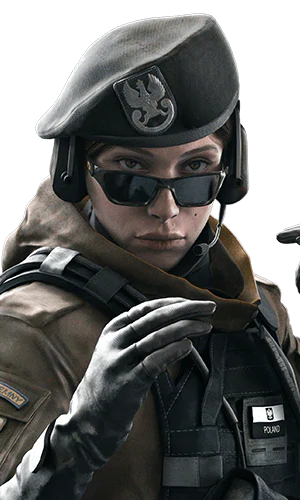

Zofia
Echte naam: Zofia Bosak
Zofia Bosak werd geboren op 28 januari 1981 in Wrocław, Polen. Ze is de oudste dochter van Jan Bosak, voormalig commandant van de Poolse Special Forces-eenheid GROM. Ze is ook de oudere zus van Elżbieta Bosak. Toen ze opgroeide, gaf haar vader de voorkeur aan Zofia en veroorzaakte een kloof tussen hen. Ondanks dit was Zofia zeer beschermend voor haar zus.
Zofia ging samen met haar zus naar de militaire school van haar vader. Tijdens het bijwonen werd ze onder druk gezet om op elk niveau te presteren - een last die haar jongere zus niet kon verwerken.
Tijdens een schoolreisje naar het Mazurische merengebied was Zofia ten prooi aan een verontrustende grap die haar bijna het leven kostte. Terwijl ze in het meer speelde, probeerden drie jongens uit haar klas om de beurt haar te verdrinken, gewoon voor 'plezier'. Deze gewelddadige ervaring markeerde haar met een diep wantrouwen tegenover anderen. De week daarop moet ze naast haar aanvallers in de klas zitten. Om met haar groeiende angst om te gaan, besloot ze haar training verder te stimuleren en ervoor te zorgen dat ze op haar vaardigheden kon vertrouwen voor bescherming. Haar vader stemde ermee in haar meer meedogenloze technieken te laten zien, aangezien ze zijn methoden nooit in twijfel zou trekken.
Toen Zofia de wettelijke leeftijd bereikte, nam ze dienst in het leger. Een van de meest opvallende exploits van Zofia is een reddingsoperatie in Guatemala, met de codenaam Red Agatha. Een rampzalige tropische storm vormde een zinkgat in het midden van de stad en slikte een hele buurt in. Zofia werd ingezet om een team wetenschappers te beschermen die de omtrek onderzoeken. Tijdens een plotselinge aanlanding redde ze een kind van verdwijnen in de afgrond. Om haar vermogen om ontberingen te weerstaan te belonen, ontving Zofia een medaille en werd gepromoveerd tot tweede luitenant.
Tijdens haar ervaringen smeedde Zofia een tweede familie overzee. om meer impact op het veld te hebben, leerde ze haar ploeggenoten vertrouwen in haar leven, waarbij ze de wrede les van het incident in Lakeland heroverwoogde. Ver weg van de brutale training van haar vader, liet Zofia haar muren zakken en ontwikkelde voor het eerst nauwe banden. Ze ontmoette haar nu-echtgenoot tijdens een malafide operatie in Mali, waar ze elkaar allebei als vijandig beschouwden.
Uitgedaagd door haar ploeggenoten op het veld, ontdekte ze de ware soort specialist die ze wilde worden. Op het hoogtepunt van haar carrière vloog ze terug naar Polen voor haar huwelijksceremonie. De viering werd kort gehouden, maar Zofia keerde snel terug naar Wroclaw voor haar zwangerschapsverlof. Haar aankomst in Polen werd al snel gevolgd door het plotselinge overlijden van haar vader.
De geboorte van haar dochter had een diepgaand effect op Zofia, wat leidde tot haar behoefte om met haar familie te cocoonen - maar Ela negeerde de pogingen van haar zus om zich te verzoenen.
Zofia keerde terug naar de GROM kort nadat hij hoorde dat Ela de selectie zou doorgeven. Behalve haar pogingen om opnieuw contact te maken met haar zus, hield Zofia afstand van iedereen. Haar squadron zag deze verandering en vroeg zich af of haar recente obsessie met het zakhorloge van haar vader een overblijfsel van verdriet was, of iets anders.
Toen Ela het prestigieuze aanbod om lid te worden van Team Rainbow accepteerde, zag Zofia geen reden om achter te blijven. Alles aan de GROM leek haar nu aan haar vader te herinneren.
Een Medium gepanserde operator, Zofia heeft toegang tot de KS79 LIFELINE, een lanceerinrichting met dubbele loop die slaggranaten of hersenschudgranaten kan lanceren.
Bepakkings keuzes voor Zofia
Primaire wapen(s):
LMG-E Light Machine Gun
M762 Assault Rifle
Secondaire wapen(s):
RG15 Handgun
Secondaire gadgets:
Inbreuklading
Claymore
Primaire gadget:
KS79 LIFELINE